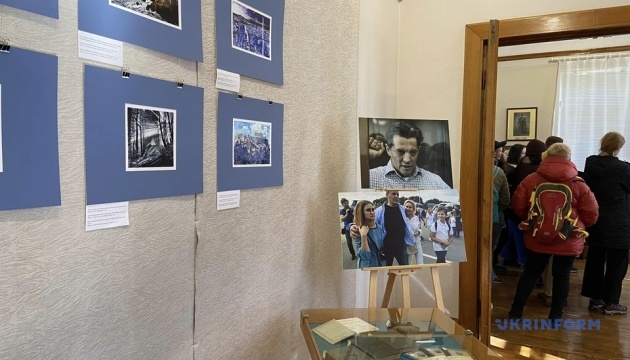

В Україні зафіксували рекорд із наймасовішого читання поеми Шевченка «Катерина»
В Україні зафіксували рекорд з наймасовішого читання українцями й іноземцями поеми «Катерина» Тараса Шевченка.
Про це повідомляє пресслужба Міністерства культури та інформаційної політики, передає Укрінформ.
"Сьогодні, 11 березня, у Міністерстві культури та інформаційної політики відбулася церемонія фіксації рекорду України за наймасовіше читання поеми «Катерина» Тараса Шевченка, українцями та іноземцями, з нагоди 210-річчя народження Кобзаря у межах ініціативи «Шевченко єднає». Рекорд засвідчив 210 учасників із 22 країн, які декламували рядки з твору Тараса Шевченка", розповiдається у повідомленні.
Зазначається, що флешмоб об’єднав людей різного віку, статі, посад з усіх областей України та з 22 країн світу. Дипломи із засвідченням рекорду отримають всі учасники, які читали поему.
«Ми тішимося з того, що реалізували цей масштабний проєкт: було дійсно непросто об’єднати 210 людей з усього світу. Але ми це зробили. Будь-яка справа, що робиться натхненно, сама собою є унікальною. А від унікальності до рекордності - лише крок», - сказав т. в. о. міністра культури та інформаційної політики Ростислав Карандєєв.
У МКІП нагадують, що акцію із читання поеми «Катерина», за якою спостерігали представники Книги світових рекордів, було ініційовано до 210-ї річниці від дня народження Тараса Шевченка
До декламування поеми долучилися, зокрема, представники міністерств, рятувальники ДСНС, військові ЗСУ, Національної гвардії, прикордонники Львівського й Донецького загонів ДПСУ та інші.
Також поему читали народні депутати, дипломати, актори, представники та представниці громадської сфери, культури та шоу-бізнесу.
Як повідомлялося, 9 березня Україна відзначала 210-річчя від дня народження видатного поета, художника та громадського діяча Тараса Шевченка.
На батьківщині Шевченка відкрили виставку малюнків колишнього політв'язня Романа Сущенка
У Національному заповіднику "Батьківщина Тараса Шевченка" у селі Шевченкове Черкаської області відкрилася виставка малюнків першого заступника голови Черкаської облради, колишнього журналіста Укрінформу і політв'язня Кремля Романа Сущенка.
"...Відкриваємо виставку моїх малюнків, виготовлених з підручних матеріалів, кульковою ручкою та природними барвниками, під час перебування у російських буцегарнях у період із 2017 по 2019 роки. Відкриття експозиції присвячується 210-й річниці від дня народження видатного українського художника, поета та громадського діяча Тараса Шевченка", - написав Сущенко.
Він зазначив, що працював над малюнками під час перебування у СІЗО "Лефоротово" та виправній колонії 11 у Кіровській області, біля селища Утробине.
Роман Сущенко народився на Черкащині. Закінчив військове училище, брав участь у миротворчій місії у Боснії та Герцеговині. З 2002 року працював в Укрінформі, з 2010-го був власним кореспондентом у Франції.
Сущенка заарештували у Москві в 2016 році за обвинуваченням у шпигунстві й засудили до 12 років колонії. У 2019 році був звільнений під час обміну утримуваними особами між Україною і Росією.
Перший «Оскар» для України: і вітання, і співчуття водночас
Документальний фільм «20 днів у Маріуполі» отримав першого для України «Оскара». Цілком заслуженого. Як оцінюють в Україні найвищу світову кінонагороду?
Так, це пронизливий фільм авторства Мстислава Чернова, фотокореспондента Євгена Малолєтки та продюсерки Василіси Степаненко, які разом із режисером працювали в оточеному Маріуполі у 2022 році. Вони стали свідками окупації, обстрілів, руйнувань, лікарняного життя та людських історій, понівечених війною у напівзруйнованому приміщенні, і змогли не лише відзняти, а й вивезти матеріали вже з окупованого Маріуполя.
Як сказав в оскарівській промові режисер Чернов: «Кіно формує спогади, спогади формують історію». Важливо, щоб ця історія промовляла правду. Власне, виступ Мстислава Чернова на святі кіно виглядав блискучою болючою і концентрованою правдою, яка відрізнялась від святкового фону. Правда промовляла вперше з часів повномасштабного вторгнення на великій сцені найвідомішої кінопремії.
Розтиражована фраза про перший український «Оскар», якого б краще не було, далі конструювала не менш важливі сенси, – і для фільму, і для глядачів. Про важливість пам’яті, про крихкість життя і необхідність докласти всім нам зусиль – і світові, і українцям, аби ці трагедії не були даремними, а ще про значення перемоги для нашого майбутнього – йдеться далі у наших експрес-розмовах із діячами культури.
Юрій Макаров, журналіст, телеведучий та документаліст, каже про той рідкісний випадок у кіноіндустрії, коли «справедливість взяла верх». Це передовсім важка і емоційно сильна робота оператора, «як людина з камерою має мужність не відводити очі від страшного. Після того, як в одному з епізодів загинула маленька дівчинка, яку намагалася врятувати. І він опускає камеру, але не вимикає. І оця камера в підлогу – це одне з найсильніших для мене відчуттів від документального фільму».
Фільм «20 днів у Маріуполі» до «Оскара» вже отримував численні нагороди. До сьогодні стрічка здобула більш як 20 нагород та понад 40 номінацій. Серед них премія BAFTA у категорії «Найкращий документальний фільм», він визнаний документальним фільмом року на 44-й щорічній премії London Critics' Circle Awards.
За день до вручення «Оскара» картина «20 днів у Маріуполі» отримала й найвищу українську мистецьку нагороду – Шевченківську премію. Стрічка мала і касовий успіх – за перший вікенд вересня 2023 року фільм зібрав понад 530 тисяч гривень в українському прокаті, ставши найбільш касовим українським документальним фільмом в історії.
Тональність відгуків на перемогу задав режисер своїм виступом, і це нині дуже відчувається в реакції людей. Мстислав Чернов зі сцени промовив: «Це перший «Оскар» в історії України. Це честь для мене. Але напевно я буду першим режисером на цій сцені, який скаже, краще б я ніколи не знімав цього фільму. Якби я міг змінити це. Щоб Росія ніколи не нападала на Україну, ніколи не окуповувала наші міста».
... І це справді перемога з важким серцем.
Натомість, вітаючи усіх причетних до першого українського «Оскара», режисерка та письменниця Ірина Цілик згадує і про інші оскарівські перемоги: «Україна вже колись пишалася двома відзнаками від Американської кіноакадемії . У 2006 році їх привіз засновник компанії Фільмотехнік» Анатолій Кокуш. Ці відзнаки присуджуються за наукові та інженерські розробки в галузі кінематографа. Хто з українських кінематографістів не знає крани від «Фільмотехнік»? У Голлівуді їх знають також, і це приємно. Також «Оскари» свого часу отримували етнічні українці, емігранти. Але сьогоднішня нагорода для нас дуже особлива. Вперше український режисер отримав «Оскар» за стрічку від України, тож славімо його».